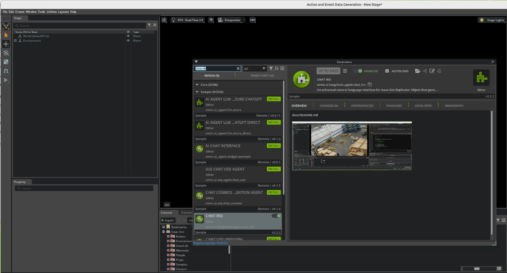
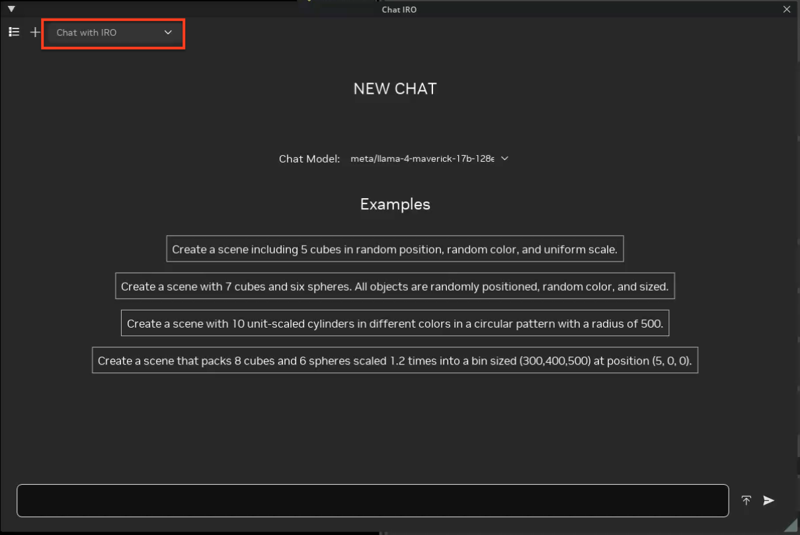
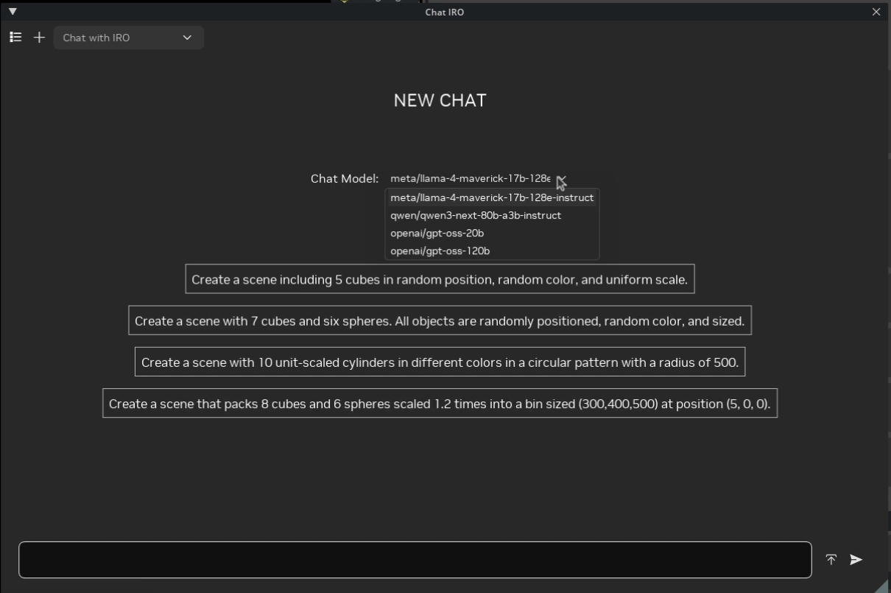
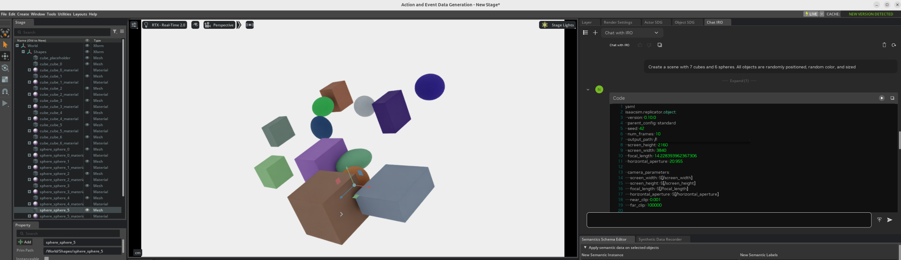

Chat IRO: Natural Language Interface for Isaac Sim Replicator Object#
Vision-language and scene-generation workflows often require users to hand‑write YAML configuration files for Isaacsim.replicator.object (IRO). This can be error‑prone and slow, especially for complex layouts, harmonizers, physics setups, and camera rigs.
Chat IRO is a natural‑language interface that converts plain English
descriptions into executable IRO YAML configurations and runs them directly
inside Isaac Sim. It sits on top of the IRO extension and automates
configuration authoring, validation, and execution.
Chat IRO has the following features:
Convert English descriptions into IRO YAML scenes.
Use a Retrieval‑Augmented Generation (RAG) system with thousands of production YAML examples to improve correctness and reuse best practices.
Validate generated YAML for syntax and common structural issues before execution.
Preview the generated scene immediately in the Isaac Sim viewport.
Save and reload configuration files for iterative workflows.
Workflow#
Chat IRO uses the following workflow to generate scenes:
You type a natural‑language request such as
Create a scene with 10 random size and color cubesinto the Chat IRO window.The extension optionally queries its RAG index of existing IRO YAML files and injects relevant examples into the LLM context.
The LLM generates a candidate YAML configuration for
isaacsim.replicator.object.Chat IRO validates the YAML, fixes common issues, and executes it through IRO to create or update the scene.
The resulting synthetic scene is rendered in the viewport. You can iteratively refine the configuration by sending follow‑up prompts.
Prerequisites#
Before using Chat IRO, ensure the following requirements are met:
isaacsim.replicator.object.uiextension enabledA supported operating system (Linux is the primary platform; Windows is experimental).
An NVIDIA GPU with CUDA support (recommended).
At least 8 GB of RAM (16 GB or more is recommended for large scenes).
The
omni.ai.langchain.agent.chat_iroextension enabled.A valid NVIDIA API key for LLM access.
Note
The LLM features require a valid NVIDIA API key and sufficient credits. Visit the NVIDIA API portal to obtain a key and manage credits. See the NVIDIA API reference page for more details.
Enable Chat IRO Extension#
Follow the Omniverse Extension Manager guide to enable the
omni.ai.langchain.agent.chat_iroextension.Launch Isaac Sim and open the Extension Manager if it is not already open:
In the main menu, select Window > Extensions.
Search for
Chat IRO.Enable the extension and optionally enable AUTOLOAD so it is loaded automatically on future launches.

Configure the NVIDIA API key by setting it as an environment variable.
Linux/macOS
# Set API key for the current shell session export NVIDIA_API_KEY="nvapi-YOUR-KEY-HERE" # Make the setting persistent (for bash) echo 'export NVIDIA_API_KEY="nvapi-YOUR-KEY-HERE"' >> ~/.bashrc source ~/.bashrc
Windows (Command Prompt)
REM Set API key for the current Command Prompt session set NVIDIA_API_KEY=nvapi-YOUR-KEY-HERE REM To make the setting persistent, add the variable in REM System Properties > Environment Variables.
Note
If LLM authentication fails, verify that NVIDIA_API_KEY is set
and has remaining credits.
Accessing the Chat IRO Panel#
Once the extension is enabled:
Open the main Chat IRO window:
From the menu bar, select Window > Chat IRO.
A dockable Chat IRO panel opens, typically on the right side of the viewport.

Select a model from the Model drop‑down menu. Verified working models include:
meta/llama-4-maverick-17b-128e-instruct(recommended, 256K context, default)qwen/qwen3-next-80b-a3b-instruct(128K+ context)openai/gpt-oss-120b(128K context)openai/gpt-oss-20b(128K context)

After selecting a model, check the status line in the Chat IRO panel. If you see no errors, the model is ready and the extension is authenticated.
Using Chat IRO#
Chat IRO can be used in the following ways:
Using the UI Panel#
To create and preview scenes using the Chat IRO panel:
In the Chat IRO input box, type a prompt such as:
Create a scene with 7 cubes and 6 spheres. All objects are randomly positioned, random color, and sized.
Press Enter to send the prompt.
Chat IRO retrieves relevant YAML patterns from its RAG index, generates an IRO configuration, validates it, and executes it in Isaac Sim.
Inspect the viewport to verify that the generated scene matches the requested behavior (object counts, colors, positioning, lighting, and camera placement).

Refine the scene with follow‑up prompts that modify the existing configuration. For example:
Make all cubes blue and add rigidbody physics
The extension updates the YAML configuration in place, reapplies it, and refreshes the viewport.
By default, configuration files are automatically stored in a directory similar to:
~/Documents/ChatIRO_Results/config_files/my_scene.yamlYou can also specify a custom path by asking Chat IRO to save the file to a different location.
Generating New IRO Scenes#
Chat IRO is optimized for generating complete IRO scenes from concise, well‑specified prompts. Good prompts include:
Create 20 purple cubes arranged in a circular formation with radius 900 at Y = 50.Pack 8 cubes and 6 spheres scaled 1.2x into a bin sized (300, 400, 500) at (5, 0, 0).
For example, the following prompt:
Create a scene with 7 cubes and 6 spheres. All objects are randomly positioned,
random color, and sized.
will typically produce an IRO configuration similar to:
isaacsim.replicator.object:
version: 0.10.0
parent_config: standard
seed: 42
num_frames: 10
output_path: /Documents/ChatIRO_Results
screen_height: 2160
screen_width: 3840
focal_length: 14.228393962367306
horizontal_aperture: 20.955
camera_parameters:
screen_width: $[/screen_width]
screen_height: $[/screen_height]
focal_length: $[/focal_length]
horizontal_aperture: $[/horizontal_aperture]
near_clip: 0.001
far_clip: 100000
cube:
count: 7
type: geometry
subtype: cube
tracked: true
color:
distribution_type: range
start:
- 0
- 0
- 0
end:
- 1
- 1
- 1
transform_operators:
- rotateX: 0
- rotateY: 0
- rotateZ: 0
- translate:
distribution_type: range
start:
- -500
- 50
- -500
end:
- 500
- 50
- 500
- scale:
distribution_type: range
start:
- 0.5
- 0.5
- 0.5
end:
- 1.5
- 1.5
- 1.5
sphere:
count: 6
type: geometry
subtype: sphere
tracked: true
color:
distribution_type: range
start:
- 0
- 0
- 0
end:
- 1
- 1
- 1
transform_operators:
- rotateX: 0
- rotateY: 0
- rotateZ: 0
- translate:
distribution_type: range
start:
- -500
- 50
- -500
end:
- 500
- 50
- 500
- scale:
distribution_type: range
start:
- 0.5
- 0.5
- 0.5
end:
- 1.5
- 1.5
- 1.5
default_camera:
camera_parameters: $[/camera_parameters]
transform_operators:
- rotateX: -30
- rotateY: 45
- rotateZ: 0
- translate:
- 0
- 0
- 1000
- scale:
- 1
- 1
- 1
type: camera
dome_light:
intensity: 1500
subtype: dome
transform_operators:
- rotateX: 270
type: light
More Prompt Examples#
Use these prompts to explore richer scenes:
Bin packing
Create a scene that packs 8 spheres and 10 cubes scaled 1.2 times
into a bin sized (300, 400, 500) at position (5, 0, 0)
Grid layout
Create 25 cubes arranged in a 5x5 grid with spacing of 100 units
Physics
Create 20 spheres with rigidbody physics falling from height 500
onto a ground plane
Note
Complex mathematical layouts (for example, circular or grid‑based arrangements) may require a few iterations. If object placement does not match expectations, use a follow‑up prompt that focuses only on correcting the formulas or spacing.
Using Existing USD Scenes#
You can also reference existing USD stages or assets in your prompts:
Create a warehouse stage
Create a warehouse environment with the following settings:
WAREHOUSE:
USD: /home/user/Assets/warehouse.usd
Apply collision physics.
Scale the warehouse to 100 times its original size.
Rotate the warehouse -90 degrees on the X-axis.
CAMERA:
Position randomly between 1800-2000 units away on Z-axis.
Rotate randomly -180 to 180 degrees on Y-axis.
Tilt -30 degrees on X-axis for overhead view.
Set the number of frames to 30.
Note
Prompts that reference existing USD stages or assets require those USD files (and their dependencies) to be available locally. Chat IRO loads the stage and assets into the scene so it can reference them in the generated YAML configuration. The configuration options shown in the examples above are illustrative; you can use any other settings supported by the IRO extension.
Editing Existing IRO YAML Files#
Chat IRO can also load and modify YAML configuration files that you have created manually or with other tools.
Typical workflow:
Ask Chat IRO to load a file:
load /home/user/Documents/ChatIRO_Results/config_files/my_scene.yaml
Inspect the generated scene in the viewport.
Apply edits using natural language, such as:
Add 5 more cubes with random colors. Increase dome light intensity to 3000. Add a rotating camera that orbits the scene 360 degrees.
Save the updated configuration:
save /absolute/path/to/my_scene_v2.yaml
Behind the scenes, Chat IRO reuses the same validation and execution pipeline used for newly generated configurations.
Managing Output Files and Directories#
By default, Chat IRO saves generated configuration files and simulation outputs to a structured directory under your home folder.
Default Output Location#
All Chat IRO outputs are organized in:
~/Documents/ChatIRO_Results/
├── config_files/ # YAML configuration files
├── simulation_results/ # IRO simulation outputs
└── .cache/ # Temporary files (hidden)
The
config_files/directory contains YAML files that define scenes.The
simulation_results/directory contains rendered images, sensor data, and other outputs generated when executing the YAML configurations.The
.cache/directory stores temporary processing files.
Note
If ~/Documents/ChatIRO_Results/ does not exist, Chat IRO creates it
automatically on first use.
Changing the Output Directory#
You can change the default output directory with an environment variable:
# Linux/macOS
export CHAT_IRO_OUTPUT_DIR="~/MyProjects/IRO_Results"
# To make it persistent, add to your shell startup file, for example:
echo 'export CHAT_IRO_OUTPUT_DIR="~/MyProjects/IRO_Results"' >> ~/.bashrc
source ~/.bashrc
REM Windows (Command Prompt)
set CHAT_IRO_OUTPUT_DIR=C:\Users\YourName\IRO_Results
REM Add to System Environment Variables for persistence
Note
Advanced users can also configure the default output directory in the Chat IRO extension settings or via the Python APIs that ship with the extension.
Natural‑Language File Commands#
Chat IRO understands simple text commands for loading, saving, and running configurations:
Loading files
load /path/to/my_scene.yaml
Saving files
save /absolute/path/to/my_warehouse_scene.yaml
save this as /absolute/path/to/production_config.yaml
Simulating with specific parameters
simulate with seed 123
Note
For reliable behavior, always specify an absolute path when saving, for example:
save /absolute/path/to/my_scene.yaml. Using only a file name (for example,
save my_scene.yaml) is not recommended because the save location can vary
depending on your environment and configuration.
Chat IRO RAG Configuration#
Chat IRO includes a Retrieval‑Augmented Generation system that provides deep knowledge of existing IRO scenes and best‑practice configurations.
The behavior of the RAG system can be customized in extension.toml:
[settings.exts."omni.ai.langchain.agent.chat_iro"]
enable_rag = true # Enable/disable RAG (default: true)
rag_top_k = 15 # Number of documents to retrieve
rag_max_tokens = 8000 # Maximum tokens for RAG context
enable_multi_query_rag = true # Enable multi‑query decomposition
max_sub_queries = 3 # Maximum number of sub‑queries
# Optional cross‑encoder reranking
enable_rag_reranking = false
reranker_model = "BAAI/bge-reranker-large"
When enabled, RAG allows Chat IRO to:
Break complex prompts into multiple focused sub‑queries.
Retrieve relevant YAML snippets for geometry, harmonizers, and cameras.
Merge and rerank results to provide higher‑quality configurations.
Note
Enabling cross‑encoder reranking typically improves retrieval accuracy by
10–30% at the cost of additional latency (around 100–200 ms per request).
For simple prompts or low‑latency environments, keep
enable_rag_reranking = false.
Best Practices#
Chat IRO relies on LLMs that interpret natural language. Clear, specific prompts lead to more reliable IRO configurations.
Recommended prompting guidelines:
Specify concrete numbers rather than vague terms.
Good:
Create 20 cubes in a circular formation with radius 900 at Y = 50.Avoid:
Create some objects in a circle.Explicitly describe sizes, positions, and physics requirements.
Build scenes iteratively and validate each step in the viewport.
Save working configurations frequently and version them as you refine.
If the generated YAML does not execute or the scene appears empty:
Ask Chat IRO to regenerate with corrected structure, for example:
Regenerate the configuration using valid YAML syntax and complete all missing parameters.
Focus corrective prompts on specific errors (spacing, rotations, counts, physics flags) instead of rewriting the entire scene.
Troubleshooting#
Common issues and remedies:
LLM authentication failed
Symptom: Error message about missing or invalid API key; no YAML generated.
Action: Verify
NVIDIA_API_KEYin your environment andextension.toml, confirm that your account has remaining credits, and restart Isaac Sim.
No scene is rendered
Symptom: Chat IRO responds, but the viewport remains empty.
Action:
Inspect the generated YAML in the Chat IRO window.
Look for error messages in the Isaac Sim console or logs.
Try a simple prompt such as
Create 5 cubesto verify basic behavior.
YAML syntax errors
Symptom: Messages such as
Failed to parse YAML.Action:
Ask Chat IRO to fix the YAML syntax.
Simplify the prompt and ensure that you request a single, self‑contained configuration.
Slow responses
Symptom: Noticeable delay between sending a prompt and receiving an answer.
Action:
Reduce
rag_top_kand disable reranking inextension.toml.Split very complex scenes into multiple, smaller prompts.
Session Management#
Over very long sessions, the LLM may drift from the original constraints or produce inconsistent configurations.
To reset the conversation:
Click the \(+\) button in the upper‑left corner of the Chat IRO window to start a new session.
Optionally restart Isaac Sim if behavior remains inconsistent.
Begin the new session with a clear instruction such as:
You are a YAML configuration generator for Isaac Sim Replicator Object. Generate only valid YAML with proper structure. Create a scene with 10 cubes in a grid layout.